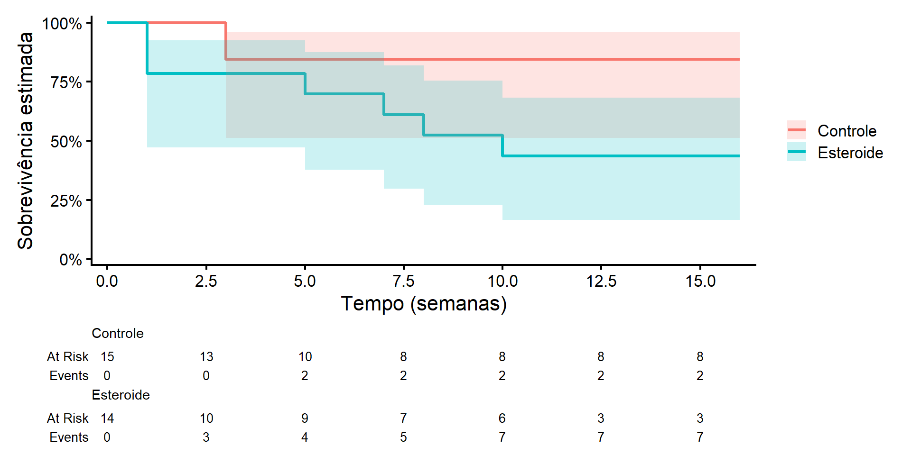
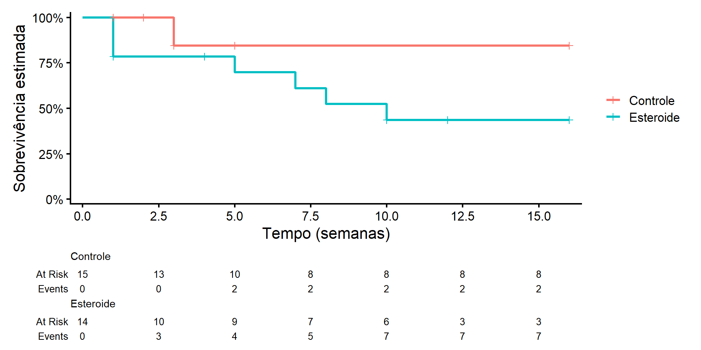
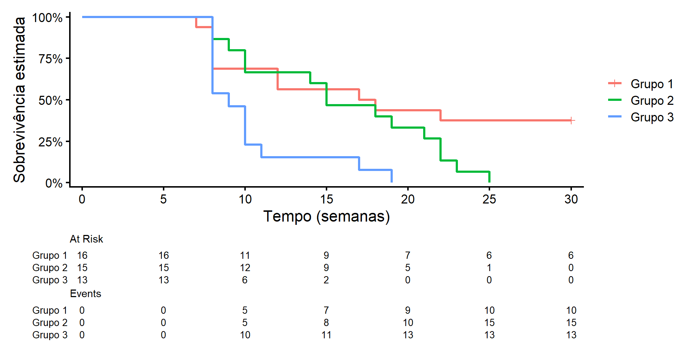

COMPARAÇÃO DE CURVAS DE SOBREVIVÊNCIA/CONFIABILIDADE
Universidade Federal Fluminense
Vamos relembrar o estudo com os dados de hepatite
Objetivo: investigar o efeito da terapia com esteroide no tratamento de hepatite viral aguda.
Vinte e nove pacientes com a doença foram aleatorizados para receber:
Cada paciente foi acompanhado por 16 semanas ou até:
| Grupos | Tempos de Sobrevivência |
|---|---|
| Controle | 1+, 2+, 3, 3, 3+, 5+, 5+, 16+, 16+, 16+, 16+, 16+, 16+, 16+, 16+ |
| Esteroide | 1, 1, 1, 1+, 4+, 5, 7, 8, 10, 10+, 12+, 16+, 16+, 16+ |
+ indica censura

Este estudo clínico aleatorizado foi conduzido para investigar o efeito da terapia com esteroide no tratamento de hepatite viral aguda.
O objetivo principal é comparar:
A partir das curvas de Kaplan-Meier, observamos que:
Surge então a questão central:
Uma abordagem inicial seria comparar as curvas em um tempo específico \(t\).
Por exemplo:
Poderíamos então construir um teste de hipótese baseado nas propriedades assintóticas de \(S(t)\).
Mas isso levanta um problema importante:
Considere \(K\) estratos de uma variável.
Em todos esses testes, o objetivo é comparar as curvas de sobrevivência/condiabilidade entre os \(K\) grupos
Hipótese nula (\(H_0\)): \(S_1(t) = S_2(t) = \cdots = S_K(t)\), para todo \(t\)
Hipótese alternativa (\(H_1\)): Existe pelo menos um par \((i,j)\) tal que \(S_i(t) \neq S_j(t)\), para algum \(t\).
Observação:
O teste Log-Rank é o principal método para comparar curvas de sobrevivência/confiabilidade.
Objetivo:
Ideia central:
Intuição:
Em cada tempo de ocorrência do evento de interesse, calculamos:
O teste acumula ao longo do tempo as diferenças do tipo \((O - E)\).
Intuição:
Sob \(H_0\) (mesma sobrevivência/confiabilidade entre grupos):
A probabilidade de um evento ocorrer no grupo \(k\) em \(t_j\) é:
Assim, o valor esperado é:
\[ E_k(t_j) = d(t_j)\frac{n_k(t_j)}{n(t_j)} \]
O teste log-rank utiliza toda a informação temporal
Para cada grupo \(k\), definimos:
Observado total:
Esperado total:
| \(t_j\) | Eventos observados | Elementos sob risco | Valores esperados | ||||||
|---|---|---|---|---|---|---|---|---|---|
| \(d_1(t_j)\) | \(d_2(t_j)\) | \(d(t_j)\) | \(n_1(t_j)\) | \(n_2(t_j)\) | \(n(t_j)\) | \(E_1(t_j)\) | \(E_2(t_j)\) | \(E(t_j)\) | |
| 0 | 0 | 0 | 0 | 15 | 14 | 29 | 0.00 | 0.00 | 0 |
| 1 | 0 | 3 | 3 | 15 | 14 | 29 | 1.55 | 1.45 | 3 |
| 3 | 2 | 0 | 2 | 13 | 10 | 23 | 1.13 | 0.87 | 2 |
| 5 | 0 | 1 | 1 | 10 | 9 | 19 | 0.53 | 0.47 | 1 |
| 7 | 0 | 1 | 1 | 8 | 8 | 16 | 0.50 | 0.50 | 1 |
| 8 | 0 | 1 | 1 | 8 | 7 | 15 | 0.53 | 0.47 | 1 |
| 10 | 0 | 1 | 1 | 8 | 6 | 14 | 0.57 | 0.43 | 1 |
| Total | \(O_1=2\) | \(O_2=7\) | 9 | \(E_1=4.81\) | \(E_2=4.19\) | 9 | |||
\[ E_1(1) = d(1)\frac{n_1(1)}{n(1)}=3 \cdot \frac{15}{29} = 1{,}55 \]
Para cada grupo k, existe a quantidade chave: \(O_k - E_k\)
Quanto maior o desvio, maior o indício de curvas diferentes.
No exemplo dos dados de hepatite:
Logo, no caso de \(K=2\) grupos, basta saber o desvio de um único grupo que o outro é obtido automaticamente.
Quando \(K=2\), a estatística de teste é: \[ T = \frac{(O_1 - E_1)^2}{\mathrm{Var}(O_1 - E_1)} \]
Basta usar um grupo (o outro é redundante), pois \((O_1 - E_1) = -(O_2 - E_2)\)
Sob \(H_0\), pode-se provar que \(T \sim \chi^2_1\) (qui-quadrado com 1 grau de liberdade).
Comparamos:
\[ d_1(t_j) \sim \text{Hipergeométrica} \]
Portanto,
\[ \mathrm{Var}(O_1 - E_1) = \sum_{j}^J \mathrm{Var}(d_1(t_j)) \]
\[ \mathbf{O} - \mathbf{E} = (O_1 - E_1, \ldots, O_K - E_K) \]
\[ T = (\mathbf{O} - \mathbf{E})^\top \Sigma^{-1} (\mathbf{O} - \mathbf{E}) \]
R fornece a seguinte saída pra o teste Log-Rank aos dados de hepatite:Call:
survdiff(formula = Surv(tempos, cens) ~ grupos, data = Dados1)
N Observed Expected (O-E)^2/E (O-E)^2/V
grupos=Controle 15 2 4.81 1.64 3.67
grupos=Esteroide 14 7 4.19 1.89 3.67
Chisq= 3.7 on 1 degrees of freedom, p= 0.06 Para cada grupo, temos:
Estatística do teste:\(\chi^2 = 3.7\).
Graus de liberdade:\(gl = 1\).
Valor-p: \(p = 0.06\).
Ao nível de significância de 5% \(p = 0.06 > 0.05\) e não rejeitamos \(H_0\).
Interpretação prática:

No teste Log-Rank, somamos apenas diferenças entre observado e esperado, por exemplo: \[ (O_1-E_1) = \sum_{j=1}^Jd_1(t_j) - \sum_{j=1}^JE_1(t_j) = \sum_{j=1}^J \left(d_1(t_j)-E_1(t_j)\right) \]
Agora, passamos a considerar: \[ (O_1-E_1) = \sum_{j=1}^Jw(t_j) \left(d_1(t_j)-E_1(t_j)\right) \]
Onde \(w(t)\) é o peso associado ao tempo (t)
Assim, esses testes passam a ser uma versão ponderada do Logrank, que considera \(w(t)\)=1 para todo \(t\).
A escolha dos pesos permite enfatizar diferentes regiões do tempo:
Podemos dar:
Isso altera a sensibilidade do teste para detectar diferenças entre as curvas.
No início do estudo, há geralmente:
Consequentemente:
Por isso, pode ser interessante privilegiar os tempos iniciais na estatística de teste.
Como os pesos são adicionados tanto no cálculo das diferenças e também na variância, a distribuição da estatística dos testes ponderados é a mesma do teste Log-Rank.
\[ w(t) = n(t) \]
Onde \(n(t)\) é o número de indivíduos sob risco no tempo \(t\).
Interpretação:
Mais sensível a diferenças precoces entre curvas de sobrevivência.
R fornece a seguinte saída pra o teste Gehan-Breslow aos dados de hepatite:
Asymptotic Two-Sample Gehan-Breslow Test
data: Surv(tempos, cens) by factor(grupos) (Controle, Esteroide)
Z = 1.7897, p-value = 0.07349
alternative hypothesis: true theta is not equal to 1\[ w(t) = \sqrt{n(t)} \]
Onde \(n(t)\) é o número de indivíduos sob risco.
Interpretação:
Equilibra sensibilidade entre:
R fornece a seguinte saída pra o teste Tarone-Ware aos dados de hepatite:
Asymptotic Two-Sample Tarone-Ware Test
data: Surv(tempos, cens) by factor(grupos) (Controle, Esteroide)
Z = 1.859, p-value = 0.06303
alternative hypothesis: true theta is not equal to 1\[ w(t) = \hat{S}(t) \]
Onde \(\hat{S}(t)\) é a função de sobrevivência estimada até o tempo \(t\).
Interpretação:
Em relação aos demais:
R fornece a seguinte saída pra o teste Peto-Peto aos dados de hepatite:
Asymptotic Two-Sample Peto-Peto Test
data: Surv(tempos, cens) by factor(grupos) (Controle, Esteroide)
Z = 1.8571, p-value = 0.06329
alternative hypothesis: true theta is not equal to 1A escolha do teste depende de onde as curvas diferem ao longo do tempo.
Pergunta central:
Diretrizes gerais:
Diferenças precoces → preferir testes que pesam mais o início
Não existe teste “melhor” universalmente
Existe o teste mais adequado ao contexto dos dados
Como decidir na prática?
Para ilustrar este tópico, considere um estudo clínico aleatorizado conduzido pela Fiocruz-MG
Realizado com 44 camundongos para avaliar a eficácia da imunização contra malária
Os animais foram acompanhados por 44 dias
Divisão em três grupos, todos infectados por malária:
Grupo 1: imunizados 30 dias antes da infecção por malária e também infectados por esquistossomose
Grupo 2: apenas infectados por malária e Sem vacinação
Grupo 3: infectados por malária e esquistossomose e sem vacinação
Os tempos de observados (em dias) são
| Grupos | Tempos de Sobrevivência |
|---|---|
| 1 | 7, 8, 8, 8, 8, 12, 12, 17, 18, 22, 30+, 30+, 30+, 30+, 30+, 30+ |
| 2 | 8, 8, 9, 10, 10, 14, 15, 15, 18, 19, 21, 22, 22, 23, 25 |
| 3 | 8, 8, 8, 8, 8, 8, 9, 10, 10, 10, 11, 17, 19 |

Call:
survdiff(formula = Surv(tempos, cens) ~ grupos, data = Dados2,
rho = 0)
N Observed Expected (O-E)^2/E (O-E)^2/V
grupos=Grupo 1 16 10 17.00 2.8816 6.4111
grupos=Grupo 2 15 15 14.51 0.0167 0.0317
grupos=Grupo 3 13 13 6.49 6.5190 10.4447
Chisq= 12.6 on 2 degrees of freedom, p= 0.002 Comentário:
- Rejeitamos a hipótese nula \(H_0\), indicando que há diferenças significativas nas curvas de sobrevivência entre os grupos.
- Observando os desvios \(O-E\), o Grupo 1 apresenta menos eventos do que o esperado, enquanto o Grupo 3 apresenta mais eventos do que o esperado.
- O Grupo 2 está próximo do esperado, sugerindo que seu comportamento de sobrevivência é intermediário.
Call:
survdiff(formula = Surv(tempos, cens) ~ grupos, data = subset(Dados2,
grupos != "Grupo 3"))
N Observed Expected (O-E)^2/E (O-E)^2/V
grupos=Grupo 1 16 10 13.7 1.01 2.53
grupos=Grupo 2 15 15 11.3 1.23 2.53
Chisq= 2.5 on 1 degrees of freedom, p= 0.1 Call:
survdiff(formula = Surv(tempos, cens) ~ grupos, data = subset(Dados2,
grupos != "Grupo 2"))
N Observed Expected (O-E)^2/E (O-E)^2/V
grupos=Grupo 1 16 10 15.34 1.86 7.86
grupos=Grupo 3 13 13 7.66 3.72 7.86
Chisq= 7.9 on 1 degrees of freedom, p= 0.005 Call:
survdiff(formula = Surv(tempos, cens) ~ grupos, data = subset(Dados2,
grupos != "Grupo 1"))
N Observed Expected (O-E)^2/E (O-E)^2/V
grupos=Grupo 2 15 15 20.53 1.49 7.98
grupos=Grupo 3 13 13 7.47 4.08 7.98
Chisq= 8 on 1 degrees of freedom, p= 0.005 Nível de significância ajustado: \(\alpha^* = 0,017\)
Grupo 1 × Grupo 2:
Grupo 1 × Grupo 3:
Grupo 2 × Grupo 3:
Resumo geral:
- O Grupo 3 se diferencia dos Grupos 1 e 2
- Grupos 1 e 2 não apresentam diferenças significativas entre si
Bonferroni: é simples e conservador.
Holm-Bonferroni: mais poderoso, preferido quando se quer detectar diferenças reais sem aumentar o erro tipo I.
Sempre defina o nível global \(\alpha\) antes do teste e ajuste os subtestes de acordo.